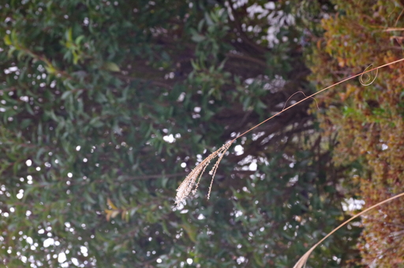

01 月 15日 ( 日 )
半径 300 メートルの旅路 (1)
前日雨だったのでお腹を空かせた野鳥たちが餌をさがしまわってるのではと予想して近所の公園まで歩いてみました。

すると案の定、茂みから出てきた 40 羽ほどのスズメたちが体を丸く膨らませて日向ぼっこをしていました。たかが ( ← この言い方嫌い ) スズメかもしれませんが 40 羽のスズメが目の高さでズラッと並ぶと壮観です。しかも寒いのでしょうがまるくフワモコになっているのがかわいい。
このスズメたちの日向ぼっこは冬になると必ず見ることができるので、冬の風物詩と言ってもいいかもしれません。
もう 1 月も半ばなので木々の葉もかなり落ちています。

とはいえまだ 1 月なので秋の名残も少しは残っていたり。
このような残された木の実などは野鳥にとっては冬の貴重な食料なので野鳥が集まりやすいと言います。今日はなにもいませんでしたがまた別の日に訪れようかと思います。
やはりお腹を空かせていたのかサザンカの茂みの間をメジロが飛び交って蜜を吸っていました。

春の訪れを予感させるようなものもちらほらと。
でもこれからが冬本番です。
- Category :
- 半径 300 メートルの旅
- 日記
- blog